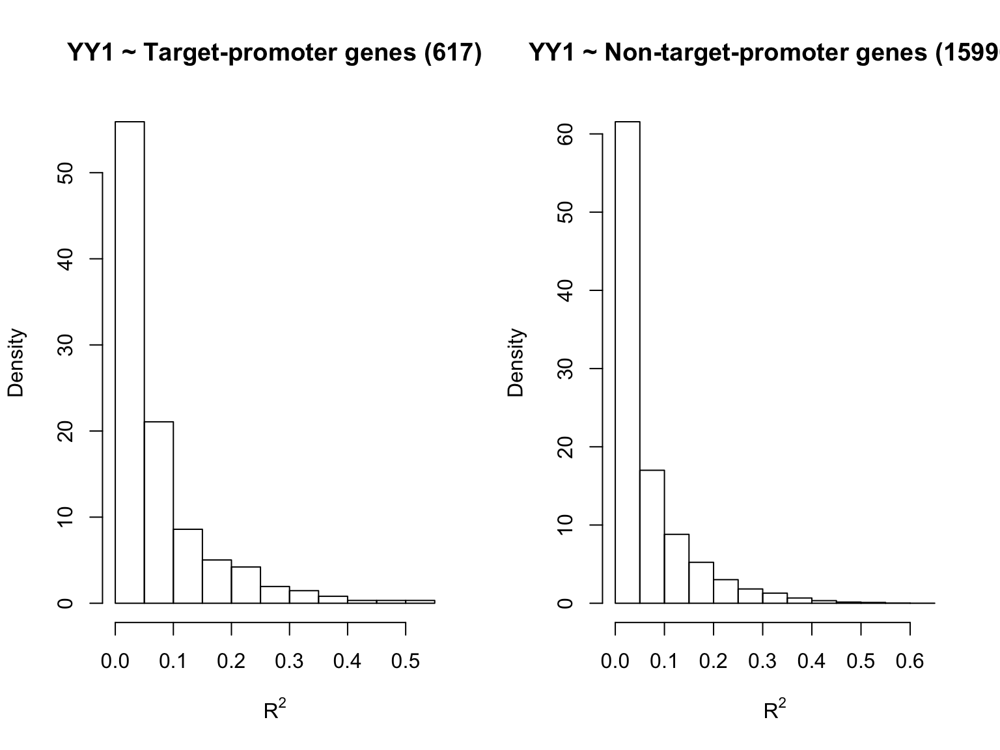
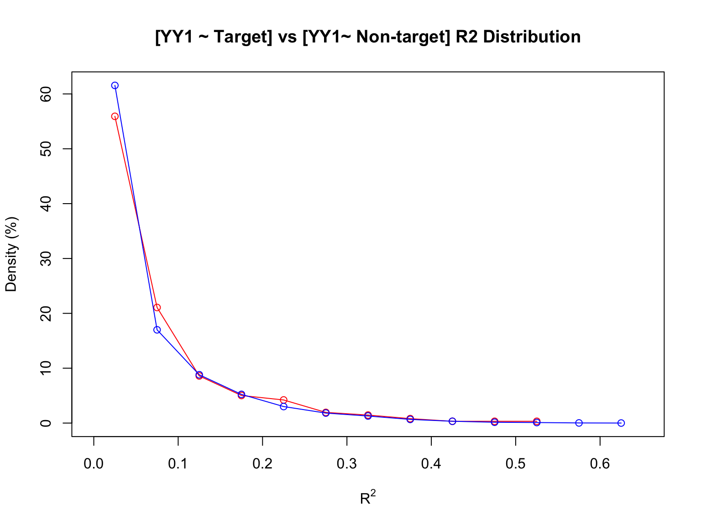
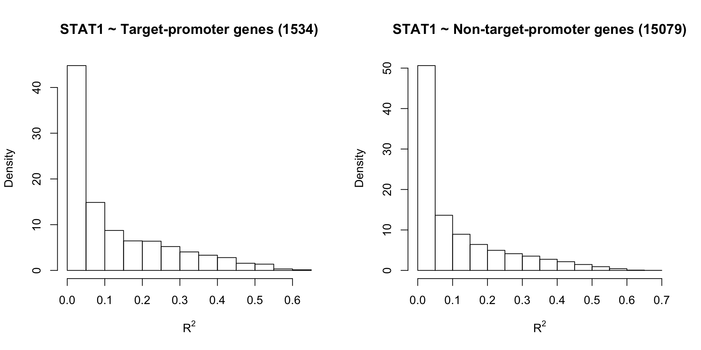
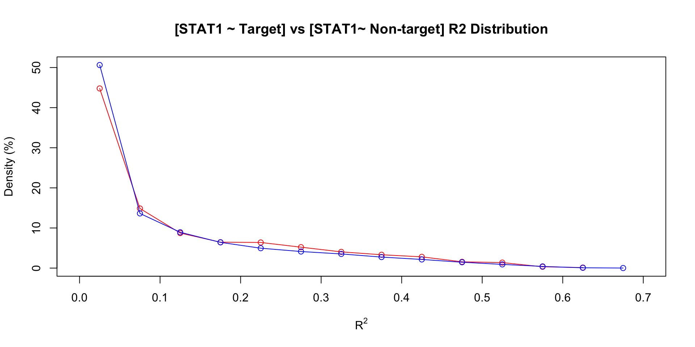
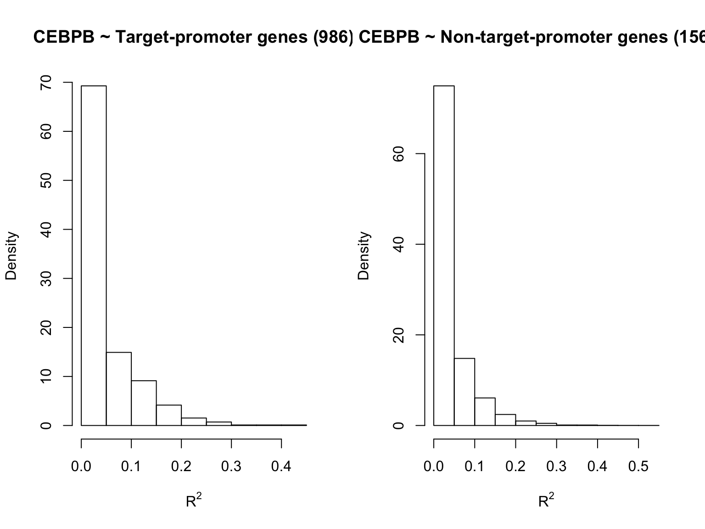
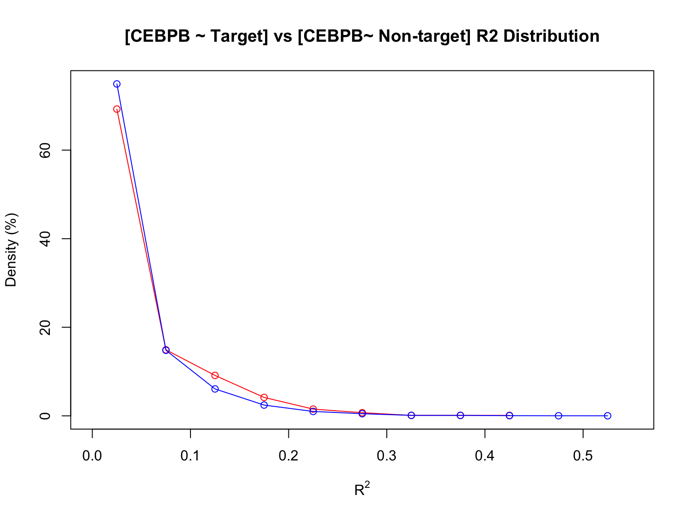
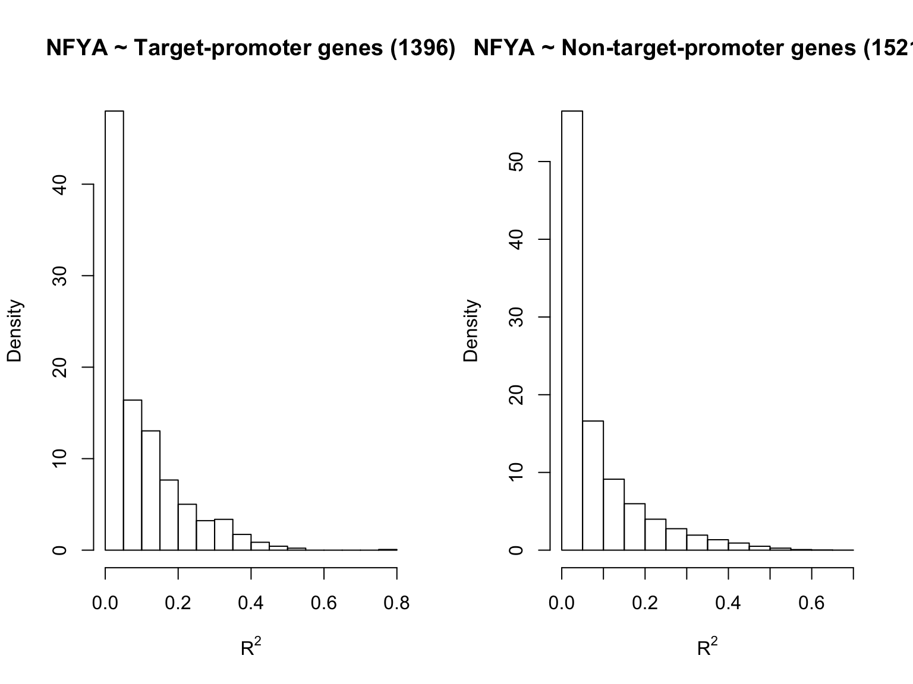
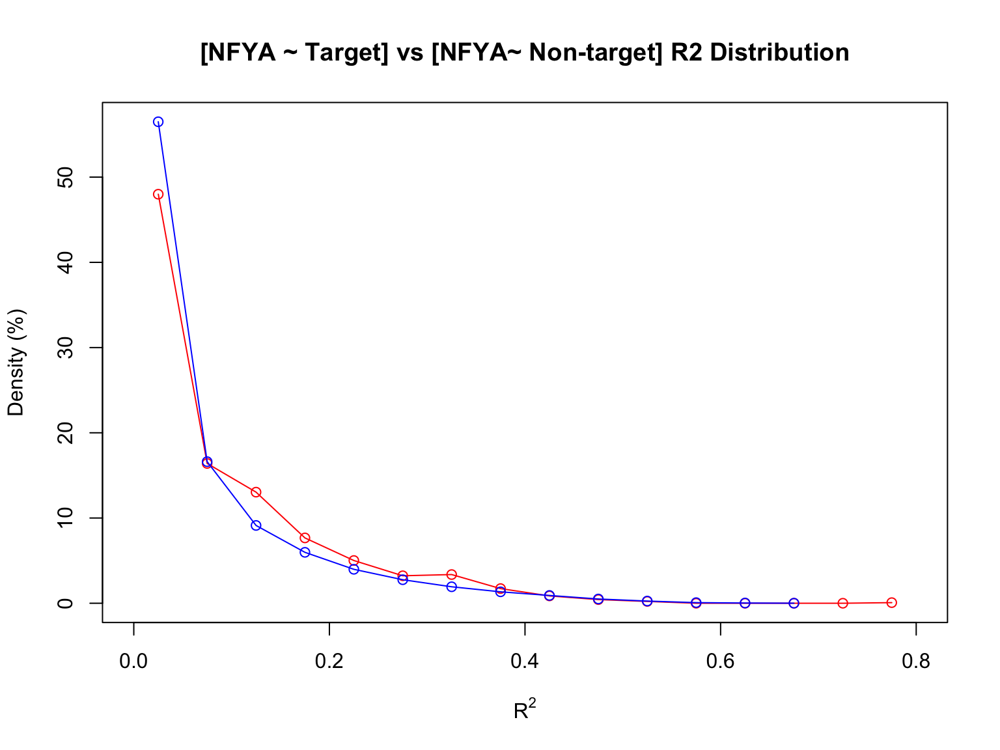

TFBS ChIP-seq Data Analysis
Yifan Zhou
2/20/2018
ChIP-seq Data
TF binding site ChIP-seq data in LCL are downloaded from the ENCODE Uniform TFBS track:
- cell line: GM12878 (Tier 1)
- file format: ENCODE narrowPeak
Open chromatin regions in LCL:
DHS peaks are available from Grubert et al., 2015 (Table S2), which were summarized over the original DHS profiles of 70 different LCL cell lines in Degner et al., 2012.
- ~ 250,000 DHS peaks in total
TFs of interest:
YY1
Encode ChIP-seq file name: wgEncodeAwgTfbsSydhGm12878Yy1UniPk.narrowPeak, integrated quality flag: Caution.
STAT1
Encode ChIP-seq file name: wgEncodeAwgTfbsSydhGm12878Stat1UniPk.narrowPeak, integrated quality flag: Caution.
CEBPB
Encode ChIP-seq file name: wgEncodeAwgTfbsHaibGm12878Cebpbsc150V0422111UniPk.narrowPeak, integrated quality flag: Caution.
SP1
Encode ChIP-seq file name: wgEncodeAwgTfbsHaibGm12878Sp1Pcr1xUniPk.narrowPeak, integrated quality flag: Good.
NF-YA
File name: wgEncodeAwgTfbsSydhGm12878NfyaIggmusUniPk.narrowPeak, integrated quality flag: Good.
Data Summary:
| YY1 | STAT1 | CEBPB | SP1 | NFYA | |
|---|---|---|---|---|---|
| # of ChIP-seq peaks | 2077 | 1769 | 5786 | 18248 | 1841 |
| % of peaks in DHS | 67 | 83 | 92 | 95 | 96 |
| # of DHS overlapped | 1702 | 1970 | 6685 | 18543 | 1897 |
| # of genes in contact w/ those DHS | 1184 | 1603 | 2577 | 9282 | 2273 |
| % of peaks in 5kb gene promoters | 26 | 36 | 15 | 36 | 64 |
| # of 5kb gene promoters overlapped | 617 | 727 | 986 | 6722 | 1397 |
Analysis of Expression Correlation
Analyze the correlation of mRNA expression levels btw a certain TF and all the other genes (one at a time), compare btw target genes & non-target genes:
- RNA-seq data: 16614 genes, 75 LCL cell lines (Battle et al., 2015, Data Table S4).
- Target genes are defined as those of which the +5kb promoter regions overlap with the TF ChIP-seq peaks.
TF of interest: YY1
[YY1] ~ [gene] mRNA expression level correlation (\(R^2\)) distributions:


TF of interest: STAT1
[STAT1] ~ [gene] mRNA expression level correlation (\(R^2\)) distributions:


TF of interest: CEBPB
[CEBPB] ~ [gene] mRNA expression level correlation (\(R^2\)) distributions:


TF of interest: SP1
[Sp1] ~ [gene] mRNA expression level correlation (\(R^2\)) distributions:


TF of interest: NF-YA
[NF-YA] ~ [gene] mRNA expression level correlation (\(R^2\)) distributions:

